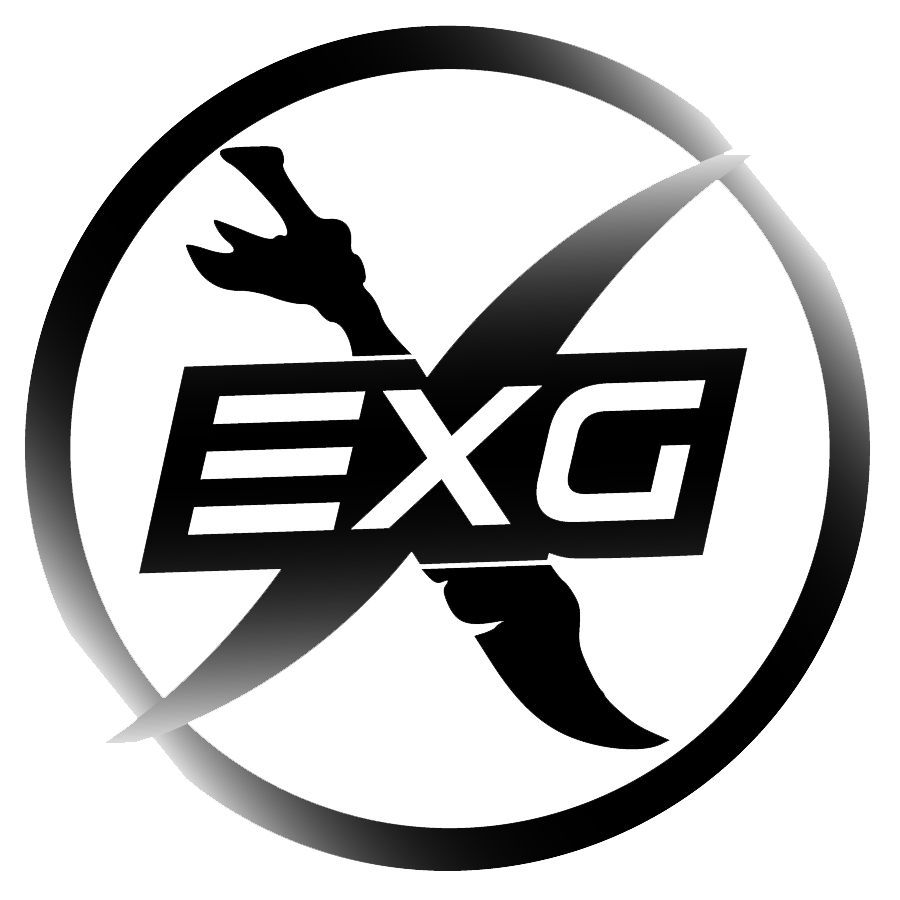
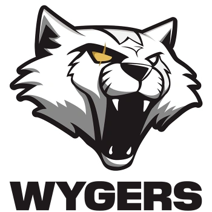
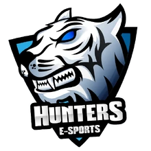

← Volver al inicio
02 — Experiencia competitiva
Los equipos por donde pasé: de Exilium a Chi Army
Cuatro organizaciones, roles distintos y contextos diferentes. Este es el recorrido real por la escena colombiana de League of Legends, con los datos verificados en Leaguepedia.
Chi Army
Wygers
Exilium
Línea de tiempo
-
Agosto 2022
Exilium Gaming — Assistant Coach
Ingreso al equipo como asistente de coaching. Salida en noviembre del mismo año.
-
Enero 2021
Wygers Colombia — Analyst
Ingreso junto al head coach Pastel para la Golden League Apertura 2021. Salida en abril de 2021.
-
Diciembre 2021
Exilium Hunters — Assistant Coach
Incorporación al equipo en diciembre. Participación en la escena colombiana hasta su siguiente ciclo.
-
2022–2023
Chi Army — Head Analyst
Rol de Head Analyst, el más senior del recorrido. Salida el 21 de agosto; el equipo se disuelve el 31 de agosto de 2023.
-
2025–Presente
Selección Colombiana de LoL — Staff
Parte del staff técnico de la selección nacional que busca clasificar a la Esports Nations Cup 2026 en Arabia Saudita.
Exilium Gaming

Exilium
Gaming
'" />
Exilium Gaming
Assistant Coach — Agosto–Noviembre 2022
Organización colombiana de esports fundada en 2015. Mi primera experiencia formal dentro del staff técnico de un equipo de liga, en el rol de asistente de coaching.
Exilium Gaming es una de las organizaciones más antiguas de la escena colombiana. Ingresar como Assistant Coach fue el primer paso dentro de una estructura formal de staff técnico. El trabajo en esta etapa estuvo orientado a aprender el funcionamiento interno de un equipo de liga: cómo se construye la semana de preparación, cómo se comunican los análisis al coach principal, y cómo se traduce la información táctica en sesiones de revisión con los jugadores.
La salida en noviembre de 2022 marcó el cierre de ese ciclo, pero dejó bases sólidas para los roles siguientes.
Wygers Colombia

Wygers
Colombia
'" />
Wygers Colombia
Analyst — Enero–Abril 2021
Rama colombiana de la organización española Wygers. Competición en la Golden League Apertura 2021 junto al head coach Pastel.
Wygers es una organización española con presencia en múltiples regiones. Su rama colombiana fue creada en junio de 2020 para competir en la escena local. Me uní en enero de 2021 junto con el head coach Pastel, en un momento de reestructuración del roster con fichajes como No One, JTL, Ichiwin y Orion.
El trabajo de análisis durante la Golden League Apertura 2021 incluyó preparación de rivales por jornada, revisión de replays con foco en macro y objetivos, y comunicación directa con el cuerpo técnico para la planificación de la semana de entrenamiento. Wygers Colombia llegó a instancias de semifinal en ese torneo, enfrentando entre otros a Exilium Hunters en uno de los cruces más disputados de la liga.
Trabajar en una organización con estructura internacional como Wygers fue el primer contacto con procesos más formalizados: calendarios de preparación, metodologías de scouting y comunicación entre diferentes áreas del club.
Exilium Hunters

Exilium
Hunters
'" />
Exilium Hunters
Assistant Coach — Diciembre 2021
Equipo colombiano con raíces en Hunters Esports, renombrado a Exilium Hunters en enero de 2022. Incorporación a finales de 2021 junto a un nuevo roster.
Exilium Hunters tiene sus raíces en Hunters Esports, organización que fue renombrada en enero de 2022. Me incorporé en diciembre de 2021 junto con un roster nuevo que incluía a Kitorinho, Danijrm, Sky LL, Feeling Good, Yerikan y el head coach Desempleado. RedScorpy y Frofen llegaron como substitutos.
Esta etapa representó volver a la dinámica de un equipo colombiano puro, con el tipo de trabajo más cercano a la cantera local: construcción de identidad de equipo desde cero, establecimiento de rutinas de análisis y adaptación rápida al meta de inicio de temporada.
Chi Army
'" />
Chi Army
Head Analyst — 2022–Agosto 2023
El rol más senior del recorrido en la escena de clubes. Equipo colombiano que se disolvió el 31 de agosto de 2023.
Chi Army representó el punto más alto del recorrido en la escena de clubes colombiana. Como Head Analyst tuve responsabilidad directa sobre toda la rama de análisis del equipo: diseño de la metodología de preparación, construcción de los informes de rivales, coordinación con el cuerpo técnico y participación activa en las decisiones de draft.
Salí el 21 de agosto de 2023. Diez días después, el 31 de agosto, Chi Army anunció su disolución. Fue el cierre de un capítulo de la escena colombiana que involucró a una parte significativa del staff y los jugadores que habían construido el proyecto.
El trabajo como Head Analyst en Chi Army enseñó la diferencia real entre ser parte de un staff y liderar una área de él. Las decisiones tienen otro peso cuando no hay nadie más arriba en esa cadena de responsabilidad.
Selección Colombiana de League of Legends
Tras el cierre del ciclo de clubes, el foco pasó a la selección nacional. Actualmente formo parte del staff técnico de la Selección Colombiana de LoL, que trabaja para clasificar a la Esports Nations Cup 2026, el torneo inaugural de selecciones nacionales organizado por la Esports World Cup Foundation. El evento está programado para noviembre de 2026 en Riad, Arabia Saudita, y League of Legends es uno de los 16 títulos confirmados.
La dinámica de una selección nacional es fundamentalmente distinta a la de un equipo de club. Los jugadores no tienen historia de entrenamiento conjunto previa, los tiempos de preparación son más acotados, y el proceso de evaluación del roster requiere un análisis comparativo de toda la escena doméstica. Es el desafío más complejo y también el más significativo del recorrido hasta ahora.